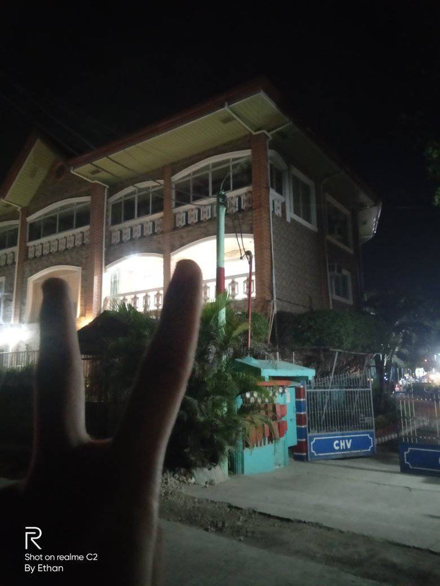
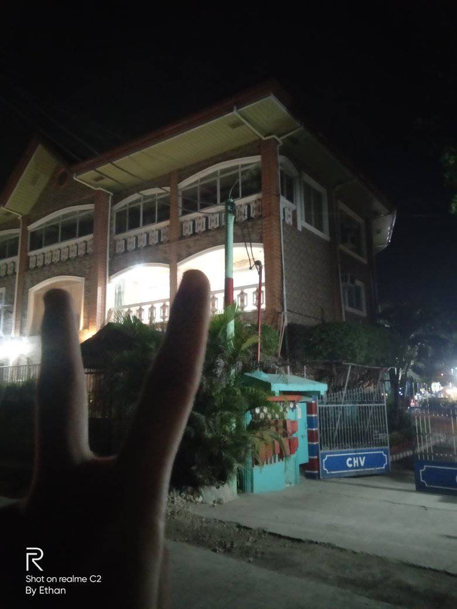

Cordova HomeVillage
Situated at Sitio Datag, Cordova, Mactan Island, Cebu there lies a small mini resort that offers both leisure and relaxing staycation. Cordova Home Village resort.
 

If you are outside Cebu and are planning to visit here you can stay at Cordova Home Village as it is just a few minutes drive from Mactan Cebu International Airport. Aside, if you want to stay in a city-like yet not so urban type of stay it is the best place for you as the place itself is situated near a coastal area with no traffic congestion. It offers a high standard of customer service that suits your needs, and the amenities that are on par with high end and big hotels in the country. You don’t have to worry about your stay as its staff are trained with excellent customer service and full security. The rooms and the entirety of the place is elegantly furnished, well maintained, and equipped with handy amenities. After a tiring day, you can rest and chill with a full day of sightseeing in the comfort of your room. Also you can take advantage of its recreational facilities such as fitness center, golf course (within 3 km), outdoor pool, massage, children's playground. Just for practicality sake, why spend on expensive resorts and hotels when you can just spend less and enjoy more at Cordova Home Village.